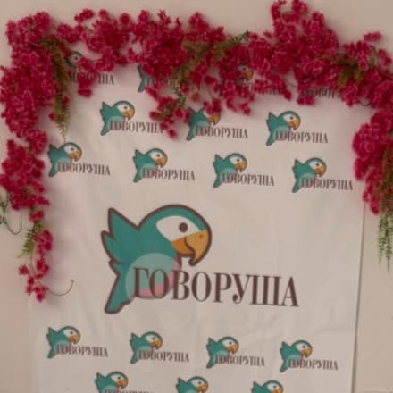
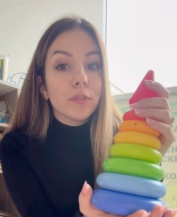

Петя, 5,5 лет
Не выговаривает Ш, Ж, Р
На диагностике выяснили: дизартрия. Назначили логопедический массаж и занятия.
Звуки поставили за 6,5 месяцев
Детский логопед, дефектолог и нейропсихолог в Мелитополе
Специалисты смотрят на ребёнка вместе и ведут по одному плану. Берём малышей с 10 месяцев и готовим к школе.

Подбор за минуту
Выберите, что беспокоит, и попугай подскажет, к кому идти.
Не выговаривает Ш, Ж, Р
На диагностике выяснили: дизартрия. Назначили логопедический массаж и занятия.
Звуки поставили за 6,5 месяцев
Не выговаривает Ш, Ж, Р
Причина другая: укороченная уздечка языка. Сначала консультация стоматолога, потом логопед.
Маршрут свой, без лишних занятий
Цены на сайте указаны для ознакомления и не являются публичной офертой. Актуальную стоимость уточняйте у администратора: +7 990 028-53-05.
Мини-садик
Диагностика
Первоклашки
Продлёнка
Мини-садик
Консультация логопеда
Мама + Малыш
Мини-садик
Первоклашки
Продлёнка
Мини-садик
Мама + Малыш
Мини-садик
Первоклашки
Продлёнка
Мама + Малыш
Индивидуальные занятия — по записи в любой день
Утренники, мастер-классы и спектакли для малышей. Места ограничены, записывайтесь заранее.
Вы поняли суть «молчания» моего сына. После занятий с Мариной Игоревной случился тот самый прорыв, хотя ходили всего 1,5 месяца. Теперь Матвей сам говорит: «Идём к Марине».
Мама Матвея
У меня две девочки, вместе прошли логопеда, подготовку к школе, сейчас английский. Педагоги внимательные и всегда подстроят занятия под ваш график.
Мама двух дочек
Я так горжусь тобой, мой сын. За 3 занятия я вижу хороший результат.
Мама ученика
Малышей берём с 10 месяцев: до 3 лет занимаемся индивидуально или вместе с мамой в группе «Мама + Малыш». Запуск речи у неговорящих детей — с 2 лет, логопед по звукам — обычно с 3–4 лет.
Одна и та же жалоба бывает по разным причинам: дизартрия, короткая уздечка, задержка речевого развития. За час ведущий логопед-дефектолог или нейропсихолог найдёт причину и составит план. Стоимость 1 600 ₽.
Логопед работает с речью: звуками, словарём, связной речью. Дефектолог помогает детям с ЗРР, ОНР, РАС, ДЦП и другими особенностями развития: развивает внимание, мышление и навыки, без которых речь не появляется.
Да. Возьмите сменную обувь для ребёнка и для себя.
Можно: оплата за день, 1 000 ₽ с 9:00 до 13:00. Еду ребёнку даёт родитель, мы поможем покушать.
Мелитополь, ул. Гоголя 93/1, ТЦ «Европа», 2 этаж, остановка «Детсад». Администратор встретит в кабинете 1.
Как нас найти
Ул. Гоголя 93/1, рядом ресторан «Пан и Пани», остановка «Детсад». В кабинете 1 вас встретит администратор и проводит к специалисту.
Возьмите сменную обувь для ребёнка и для себя, если будете на занятии.
Также отвечаем в MAX по этому номеру.
